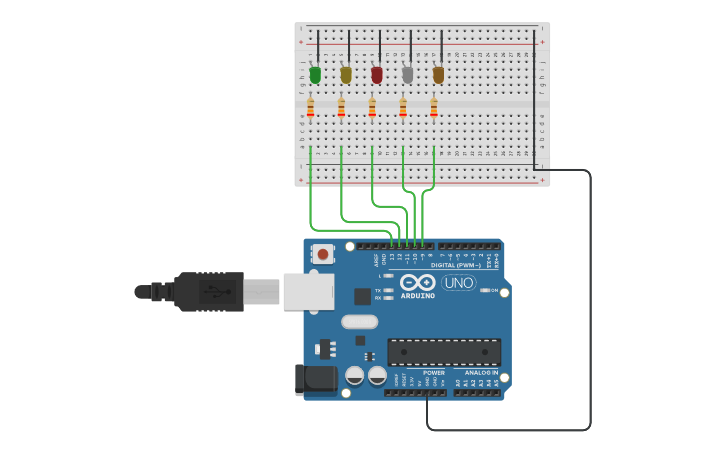

PROJECT 02: LED SEQUENCER
Mastering Loops and Arrays
Project Summary
This project takes digital output to the next level. Instead of blinking one LED, you will wire multiple LEDs and use programming "loops" to create a running light effect (like Knight Rider or airport runway lights).
Key Components
- Arduino Uno R3
- 5x LEDs
- 5x Resistors
- Jumper Wires
- Breadboard
Circuit Diagram

Pin Connections
| Arduino Pin | Component Connection |
|---|---|
| Pins 13, 12, 11, 10, 9 | Wires → LED Anodes (+) |
| GND | Wire → Negative Rail → Resistors → LED Cathodes (-) |
Step-by-Step Instructions
- Insert 5 LEDs into the breadboard in a row.
- Connect a resistor from the Cathode (Short Leg) of each LED to the top Negative Rail.
- Connect a jumper wire from the Arduino GND to the Negative Rail.
- Connect jumper wires from the Anode (Long Leg) of each LED to Arduino Pins 13, 12, 11, 10, and 9.
- Connect the USB cable, paste the code below, and upload.
Arduino Code
/* Project 2 - LED Sequencer
* Hardware: 5 LEDs connected to pins 13, 12, 11, 10, 9.
* Purpose: Demonstrate For Loops.
*/
void setup() {
// Use a for loop to configure pins 9 to 13 as outputs
for (int pin = 9; pin <= 13; pin++) {
pinMode(pin, OUTPUT);
}
}
void loop() {
// Turn LEDs on one by one from Pin 13 down to 9
for (int pin = 13; pin >= 9; pin--) {
digitalWrite(pin, HIGH); // Turn LED on
delay(100); // Wait fast
digitalWrite(pin, LOW); // Turn LED off
}
// To make it bounce back, you can add another loop here
// counting from 9 to 13!
}
How It Works
- Code Logic:
-
For Loops:
Instead of writingdigitalWrite5 separate times, we use a loop:for (int pin = 13; pin >= 9; pin--). -
Automation:
The variablepinstarts at 13 and decreases by 1 (pin--) every cycle until it hits 9. -
Delay Speed:
Changingdelay(100)to a smaller number makes the light "run" faster across the board. - Hardware Note:
-
Common Ground:
All LEDs share a single connection to the Arduino GND via the "Negative Rail" on the breadboard. This simplifies wiring.
Expected Output
The LEDs should light up one after another from left to right rapidly, creating a "wave" or "chase" effect that repeats indefinitely.
What You Learned
- How to use the Breadboard Power Rails to share connections.
- How to use
for loopsto automate repetitive tasks in code. - How to manipulate variables to control hardware pins dynamically.
Next Steps / Extension Ideas
Try making the lights bounce back and forth (Knight Rider style), or attach a potentiometer to control the speed of the sequence.